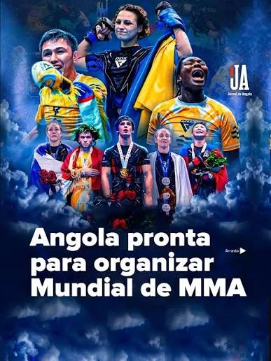

Competições
Angola prepara-se para receber um evento histórico no desporto

Campeonato do Mundo de MMA. A competição vai acontecer entre setembro e outubro de 2026 e será a primeira vez que África acolhe um evento desta dimensão. // 06 de julho de 2026.
Angola vai organizar a Basketball Africa league (BAL).
Angola foi escolhido para receber uma das maiores competições de basquetebol africano em 2026. O evento vai ajudar no desenvolvimento do desporto no país, além de promover Angola a nível internacional. //2026
Girabola mantém disputas equilibrada entre clubes

A principal competição de futebol em Angola continua marcada pelo equilibrio entre as equipas, com jogos competitivos e grande apoio dos adptos.
Associação Nacional de clubes Angolanas de futebol-ANCAF,organizadora do campeonato nacional definiu para o dia 15 de Agosto o ínicio da temporada com a disputa da supertaça entre o campeão Petro de Luanda e o Wiliete de Benguela, vencedora da Taça de Angola e o começo do campeonato nacional está previsto para o dia 22 de Agosto.
Competições de ténis movimentam atletas
Os torneios nacionais de ténis têm reunido atletas de várias regiões, promovendo o desenvolvimento e a competitividade no desporto.